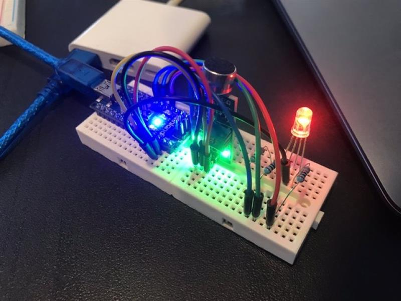

Projects
Coursework
Sentiment Analysis of Amazon Electronics Reviews
Leveraged Python, NLP techniques, and libraries like NLTK and TextBlob to analyze customer satisfaction for Amazon electronics, focusing on review patterns and sentiment trends.
Predicting Email Engagement Using Machine Learning
Developed a machine learning classifier in Python to predict user engagement with promotional emails based on browsing and purchasing history. Achieved 85% accuracy using feature engineering and a logistic regression pipeline.
Wisconsin Census Data Analysis
Used Python geospatial libraries like GeoPandas and rasterio to analyze population and land-use trends in Wisconsin, employing regression models and statistical tests.
Weather-Driven Traffic Analysis
Conducted an RStudio analysis to explore the impact of weather on traffic volume on Minnesota's Interstate-94, using Welch's T-tests and data visualizations.
Interactive COVID-19 Tableau Dashboard
Built a Tableau dashboard to map global COVID-19 cases by country and time zone, featuring interactive filters and geographic insights to highlight trends.
Shiny Apps
Minnesota Twins Player Stats Explorer
An interactive app for visualizing Minnesota Twins' player performance, focusing on key statistics like Home Runs, Batting Average, and RBIs across seasons.
Objective:
To provide an interactive platform for analyzing player performance trends for the Minnesota Twins, helping fans and analysts explore key statistics across seasons.
Notable Features:
- Dynamic visualizations with Plotly, offering zoom and hover capabilities for detailed insights.
- A clean, branded interface styled in Minnesota Twins colors (navy, red, white).
- Interactive table displaying player stats like Home Runs, Batting Average, RBIs, and Hits year-by-year.
Key Components:
- Player Filtering: View data for players with at least one home run to focus on impactful performances.
- Stat Trends: Compare trends over multiple seasons for deeper performance analysis.
- User Interaction: Interactive UI for comparing player performance metrics across seasons.
Ideal for fans and analysts interested in exploring career trajectories, player comparisons, or data-driven sports performance trends.
Healthcare Appointment No-Show Analysis
A tool for analyzing patient no-show trends and demographic factors influencing missed medical appointments.
Objective:
To help healthcare providers understand patient no-show trends, identifying actionable strategies for reducing missed appointments.
Notable Features:
- Interactive bar charts comparing no-show rates by health conditions (e.g., hypertension, diabetes).
- Line plots revealing monthly trends to identify seasonal patterns in no-shows.
- Dynamic visualizations showing age and gender distributions linked to no-show rates.
Key Components:
- Demographic Analysis: Explore trends in patient no-shows by gender, age, and health condition.
- Seasonality Insights: Identify months with higher no-show rates for targeted scheduling improvements.
- Actionable Data: Insights empower providers to optimize resource allocation and patient engagement.
Pokémon Stat Explorer
A dynamic app for exploring Pokémon stats, comparing Attack and Defense attributes across types, generations, and rarity.
Objective:
To provide Pokémon enthusiasts with an interactive tool for visualizing Pokémon stats and understanding how attributes vary by type, generation, and rarity.
Notable Features:
- Customizable filters for type and generation, enabling specific or comparative analysis.
- Distinction between Legendary and Non-Legendary Pokémon to uncover key differences.
- Visual representations of Attack and Defense attributes for in-depth insights.
Key Components:
- Generation Comparisons: Toggle between specific generations or view all simultaneously.
- Type Filtering: Examine relationships between Attack and Defense stats for specific Pokémon types.
- Interactive Visualizations: Explore how Pokémon stats have evolved across franchise history.
Designed for Pokémon fans and analysts interested in exploring stat dynamics and historical trends.
Personal Projects
Arduino Sound Sensor LED Control
A circuit designed to change an LED's color based on sound levels using an Arduino, sound sensor, and RGB LED.
This project involved designing and building a circuit using an Arduino Uno to control the color of an RGB LED based on sound levels picked up by a sound sensor. The setup included a breadboard for organizing connections, jumper cables to link components, resistors to protect the circuit, and an RGB LED that changed colors depending on the input from the sensor.
The sound sensor captured ambient noise levels and sent voltage signals to the Arduino. I programmed the Arduino in C++ using the Arduino IDE, mapping the sensor’s analog input to RGB color values. Functions like analogRead() gathered the sound data, while analogWrite() adjusted the red, green, and blue pins on the LED, making it respond dynamically to sound in real-time.
To ensure the circuit worked smoothly, I added resistors to prevent damage to the LED and made sure all jumper connections were solid. The final project combined hardware and software to create a responsive system that translated sound into light, offering hands-on experience with signal processing and embedded systems.
Choose Your Own Adventure App
An interactive app that lets users embark on a fun journey between Minneapolis and Madison, exploring city highlights along the way.
View Choose Your Own Adventure App
This Python-based app uses the Dash framework to provide a dynamic, interactive experience for users. It features a map visualization of Minneapolis and Madison, generated using Plotly, and allows users to choose between restaurants and entertainment options in each city.
High-level features include:
- Interactive Maps: Users can explore city locations through an OpenStreetMap.
- Adventure Poem: Randomly generates a unique poem for each journey.
The app is hosted on Render and combines fun storytelling with technical elements like Dash callbacks, data visualizations, and creative content generation.
Personal Website Development
A custom-built portfolio website showcasing my projects, hosted on GitHub and connected to a personalized domain.
This website was a rewarding and fun challenge that allowed me to develop and deploy a multi-page portfolio site. I used HTML and CSS for structuring and styling, ensuring a responsive design and seamless navigation across multiple sections. The project involved creating separate HTML files for each section, utilizing reusable navigation components for consistency and ease of maintenance.
High-level features include:
- Custom Domain Integration: The website is hosted through GitHub Pages and connected to a personalized domain, claudiaotero.com.
- Dynamic Project Display: Includes features like collapsible "Read More" sections for detailed project descriptions, downloadable PDFs, and integrated images.
- Responsive Design: Optimized for different devices with consistent styling and functionality.
- Version Control: Utilized GitHub for version control, ensuring iterative improvements and a clear project history.
This project not only showcases my technical skills in web development but also highlights my ability to manage end-to-end deployment, from coding and version control to domain integration and hosting. It serves as an ongoing space to share my work and learnings in a professional yet personal way.